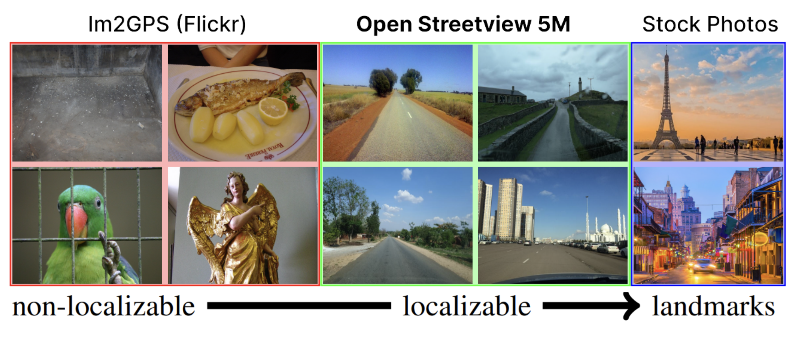
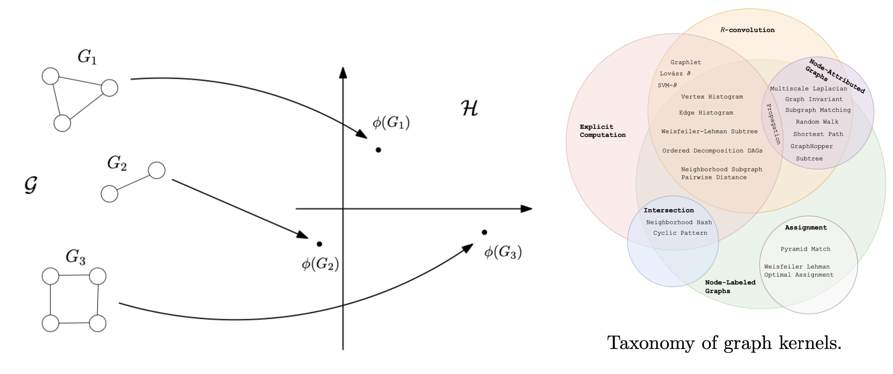
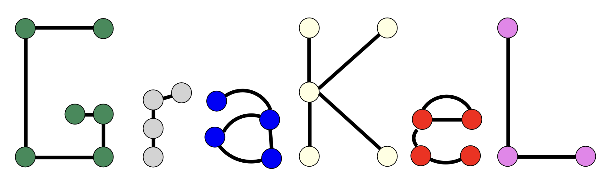

(2024) Diffusion Models as Data Mining Tools ⭐
 Ioannis Siglidis, Aleksander Holynski, Alexei A. Efros, Mathieu Aubry, Shiry Ginosar
Ioannis Siglidis, Aleksander Holynski, Alexei A. Efros, Mathieu Aubry, Shiry GinosarEuropean Conference on Computer Vision (ECCV)
(2024) The Learnable Typewriter: A generative approach to text analysis.
 Ioannis Siglidis, Nicolas Gonthier, Julien Gaubil, Tom Monnier, Mathieu Aubry
Ioannis Siglidis, Nicolas Gonthier, Julien Gaubil, Tom Monnier, Mathieu AubryBest Paper Award; Internation Conference of Document Analysis and Recognition (ICDAR)
(2024) An Interpretable Deep Learning Approach for Morphological Script Type Analysis
 Malamatenia Vlachou-Efstathiou, Ioannis Siglidis, Dominique Stutzmann, Mathieu Aubry,
Malamatenia Vlachou-Efstathiou, Ioannis Siglidis, Dominique Stutzmann, Mathieu Aubry, Internation Workshop on Computational Paleography (IWCP)
(2024) OpenStreetView-5M The Many Roads to Global Visual Geolocation
 Guillaume Astruc* Nicolas Dufour* Ioannis Siglidis*, Constantin Aronssohn, Nacim Bouia, Stephanie Fu,Romain Loiseau, Van Nguyen Nguyen, Charles Raude, Elliot Vincent, Lintao XU, Hongyu Zhou, Loic Landrieu
Computer Vision and Pattern Recognition (CVPR)
(2021) Graph kernels: A survey
 Giannis Nikolentzos, Giannis Siglidis, Michalis VazirgiannisJournal of Artificial Intelligence Research (JAIR)
(2020) GraKeL: A Graph Kernel Library in Python

Giannis Siglidis, Giannis Nikolentzos, Stratis Limnios, Christos Giatsidis, Konstantinos Skianis,
Michalis Vazirgiannis
Journal of Machine Learning Research (JMLR)Michalis Vazirgiannis